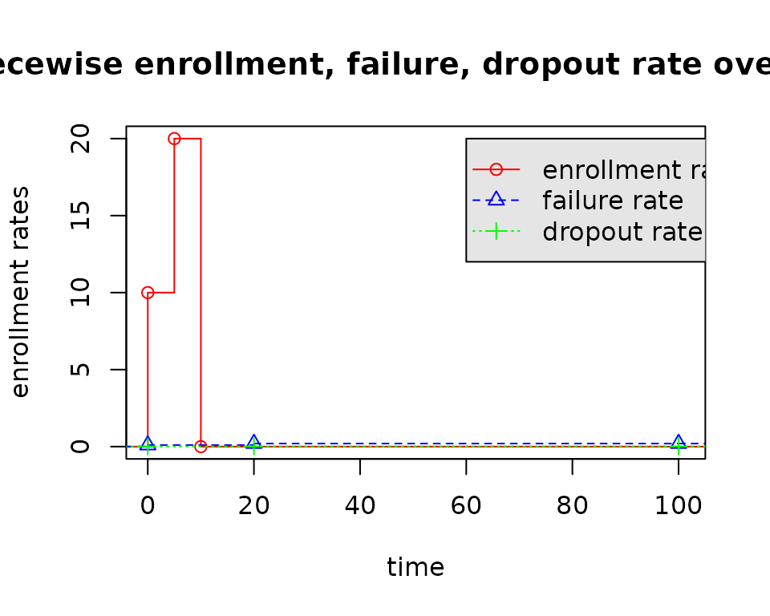

eEvents_df: compute expected number of events at 1 time point
Source:vignettes/articles/usage-expected-event.Rmd
usage-expected-event.RmdIntroduction of eEvents_df
eEvents_df() computes expected number of events at a
given analysis time by strata under the assumption of
piecewise model:
- piecewise constant enrollment rates
- piecewise exponential failure rates
- piecewise censoring rates.
The above piecewise exponential distribution allows a simple method to specify a distribution and enrollment pattern where the enrollment, failure and dropout rates changes over time.
Here the df in eEvents_df() is short for
data frame, since its output is a data frame.
Use Cases
Example 1: Single Enroll + Single Fail Period
enroll_rate <- tibble(duration = 10, rate = 10)
fail_rate <- tibble(duration = 100, fail_rate = log(2) / 6, dropout_rate = .01)
total_duration <- 22
expected_event(
enroll_rate = enroll_rate,
fail_rate = fail_rate,
total_duration = total_duration,
simple = FALSE
)## # A tibble: 1 × 3
## t fail_rate event
## <dbl> <dbl> <dbl>
## 1 0 0.116 80.4Example 2: Multiple Enroll + Single Fail Period
enroll_rate <- tibble(duration = c(5, 5), rate = c(10, 20))
fail_rate <- tibble(duration = 100, fail_rate = log(2) / 6, dropout_rate = .01)
total_duration <- 22
expected_event(
enroll_rate = enroll_rate,
fail_rate = fail_rate,
total_duration = total_duration,
simple = FALSE
)## # A tibble: 1 × 3
## t fail_rate event
## <dbl> <dbl> <dbl>
## 1 0 0.116 119.Example 3: Single Enroll + Multiple Fail Period
enroll_rate <- tibble(duration = 10, rate = 10)
fail_rate <- tibble(
duration = c(20, 80),
fail_rate = c(log(2) / 6, log(2) / 4),
dropout_rate = .01
)
total_duration <- 22
expected_event(
enroll_rate = enroll_rate,
fail_rate = fail_rate,
total_duration = total_duration,
simple = FALSE
)## # A tibble: 2 × 3
## t fail_rate event
## <dbl> <dbl> <dbl>
## 1 0 0.116 80.2
## 2 20 0.173 0.250Example 4: Multiple Duration
enroll_rate <- tibble(duration = 10, rate = 10)
fail_rate <- tibble(duration = 100, fail_rate = log(2) / 6, dropout_rate = .01)
total_duration <- c(2, 22)
try(expected_event(
enroll_rate = enroll_rate,
fail_rate = fail_rate,
total_duration = total_duration,
simple = FALSE
))## Error in expected_event(enroll_rate = enroll_rate, fail_rate = fail_rate, :
## gsDesign2: total_duration in `events_df()` must be a numeric number!Inner Logic of eEvents_df()
Step 1: set the analysis time.
total_duration <- 50Step 2: set the enrollment rates.
enroll_rate <- tibble(duration = c(5, 5), rate = c(10, 20))
# create a step function (sf) to define enrollment rates over time
sf_enroll_rate <- stepfun(c(0, cumsum(enroll_rate$duration)),
c(0, enroll_rate$rate, 0),
right = FALSE
)
plot(sf_enroll_rate,
xlab = "duration", ylab = "enrollment rates",
main = "Piecewise enrollment rate over time", xlim = c(-0.01, 21)
)
Step 3: set the failure rates and dropout rates.
fail_rate <- tibble(
duration = c(20, 80),
failRate = c(0.1, 0.2),
dropout_rate = .01
)
# get the time points where the failure rates change
time_start_fail <- c(0, cumsum(fail_rate$duration))
# plot the piecewise failure rates
sf_fail_rate <- stepfun(time_start_fail,
c(0, fail_rate$failRate, last(fail_rate$failRate)),
right = FALSE
)
plot(sf_fail_rate,
xlab = "duration", ylab = "failure rates",
main = "Piecewise failure rate over time", xlim = c(-0.01, 101)
)
# plot the piecewise dropout rate
sf_dropout_rate <- stepfun(time_start_fail,
c(0, fail_rate$dropout_rate, last(fail_rate$dropout_rate)),
right = FALSE
)
plot(sf_dropout_rate,
xlab = "duration", ylab = "dropout rates",
main = "Piecewise dropout rate over time", xlim = c(-0.01, 101)
)
Given the above piecewise enrollment rates, failure rates, dropout rates, the time line is divided into several parts:
- \((0, 5]\) (5 is the change point of the enrollment rates);
- \((5, 10]\) (10 is another change point of the enrollment rates);
- \((10, 20]\) (20 is the change point of the failure rates);
- \((20, 50]\) (50 is the analysis time);
- \((50, \infty]\) (after the analysis time).

Given the above sub-intervals, our objective is to calculate the expected number of events in each sub-intervals.
Step 4: divide the time line for enrollments
df_1 <- tibble(
startEnroll = c(0, cumsum(enroll_rate$duration)),
endFail = total_duration - startEnroll,
rate = c(enroll_rate$rate, 0)
)| df_1 | ||
| startEnroll1 | endFail2 | rate3 |
|---|---|---|
| 0 | 50 | 10 |
| 5 | 45 | 20 |
| 10 | 40 | 0 |
| 1 The time when the enrollment starts. | ||
| 2 The time from startEnroll to the analysis time. | ||
| 3 The enrollment rates | ||
Step 5: divide the time line for failure & dropout rates
df_2 <- tibble(
endFail = cumsum(fail_rate$duration),
startEnroll = total_duration - endFail,
failRate = fail_rate$failRate,
dropoutRate = fail_rate$dropout_rate
)| df_2 | |||
| endFail1 | startEnroll2 | failRate3 | dropoutRate4 |
|---|---|---|---|
| 20 | 30 | 0.1 | 0.01 |
| 100 | -50 | 0.2 | 0.01 |
| 1 The time when the failure changes. | |||
| 2 The time from endFail to the analysis time. | |||
| 3 The failure rates | |||
| 4 The dropout rates | |||
For the above df_2, one needs to discriminate if the
analysis time (total_duration = 50) is beyond the total
failure rate duration.
# if the analysis time is after the total failure rate duration
if (sum(fail_rate$duration) < total_duration) {
df_2 <- df_2[-nrow(df_2), ]
} else {
df_2 <- df_2 %>% filter(startEnroll > 0)
}| df_2 | |||
| Updated by adjusting the analysis time and fail_rate duration | |||
| endFail1 | startEnroll2 | failRate3 | dropoutRate4 |
|---|---|---|---|
| 20 | 30 | 0.1 | 0.01 |
| 1 The time when the failure changes. | |||
| 2 The time from endFail to the analysis time. | |||
| 3 The failure rates | |||
| 4 The dropout rates | |||
Step 6: divide the time line considering both the change points in enrollment, failure, dropout rates.
| df | ||||
| startEnroll1 | endFail2 | rate3 | failRate | dropoutRate |
|---|---|---|---|---|
| 30 | 20 | NA | 0.1 | 0.01 |
| 10 | 40 | 0 | NA | NA |
| 5 | 45 | 20 | NA | NA |
| 0 | 50 | 10 | NA | NA |
| 1 The time when the enrollment rate starts. | ||||
| 2 The time when the failure rate ends. And startEnroll + endFail = 50 | ||||
| 3 The enrollment rates. | ||||
We find there are lots of NA, which can be imputed by
the piecewise model.
df <- df %>%
mutate(
endEnroll = lag(startEnroll, default = as.numeric(total_duration)),
time_start_fail = lag(endFail, default = 0),
duration = endEnroll - startEnroll,
failRate = sf_fail_rate(time_start_fail),
dropoutRate = sf_dropout_rate(time_start_fail),
enrollRate = sf_enroll_rate(startEnroll)
) %>%
select(-rate)| startEnroll1 | endEnroll2 | time_start_fail3 | endFail4 | enrollRate | failRate | dropoutRate | duration5 |
|---|---|---|---|---|---|---|---|
| 0 | 5 | 45 | 50 | 10 | 0.2 | 0.01 | 5 |
| 5 | 10 | 40 | 45 | 20 | 0.2 | 0.01 | 5 |
| 10 | 30 | 20 | 40 | 0 | 0.2 | 0.01 | 20 |
| 30 | 50 | 0 | 20 | 0 | 0.1 | 0.01 | 20 |
| 1 The time when the enrollment rate starts. | |||||||
| 2 The (startEnroll, endEnroll] forms the piecewise model of the enrollment rates | |||||||
| 3 The time when the failure rate starts. | |||||||
| 4 The time when the failure rate ends. And startEnroll + endFail = 50. Besides, (time_start_fail, endFail ] forms the piecewise model of the enrollment rates. | |||||||
| 5 endEnroll - startEnroll | |||||||
Step 7: compute the expected number of events in sub-intervals following the technical details in the vignette computing expected events by interval at risk.
# Create 2 auxiliary variables for failure & dropout rate
# q: number of expected events in a sub-interval
# Q: cumulative product of q (pool all sub-intervals)
df <- df %>%
mutate(
q = exp(-duration * (failRate + dropoutRate)),
Q = lag(cumprod(q), default = 1)
) %>%
arrange(desc(time_start_fail)) %>%
# Create another 2 auxiliary variables for enroll rate
# g: number of expected subjects in a sub-interval
# G: cumulative sum of g (pool all sub-intervals)
mutate(
g = enrollRate * duration,
G = lag(cumsum(g), default = 0)
) %>%
arrange(time_start_fail) %>%
# Compute expected events as nbar in a sub-interval
mutate(
d = ifelse(
failRate == 0,
0,
Q * (1 - q) * failRate / (failRate + dropoutRate)
),
nbar = ifelse(
failRate == 0,
0,
G * d + (failRate * Q * enrollRate) / (failRate + dropoutRate) * (duration - (1 - q) / (failRate + dropoutRate))
)
)Step 8: output results
sf_time_start_fail <- stepfun(time_start_fail, c(0, time_start_fail), right = FALSE)
df <- df %>%
transmute(t = endFail, failRate = failRate, Events = nbar, time_start_fail = sf_time_start_fail(time_start_fail)) %>%
group_by(time_start_fail) %>%
summarize(failRate = first(failRate), Events = sum(Events)) %>%
mutate(t = time_start_fail) %>%
select("t", "failRate", "Events")
df %>% gt()| t | failRate | Events |
|---|---|---|
| 0 | 0.1 | 121.25411 |
| 20 | 0.2 | 15.71391 |